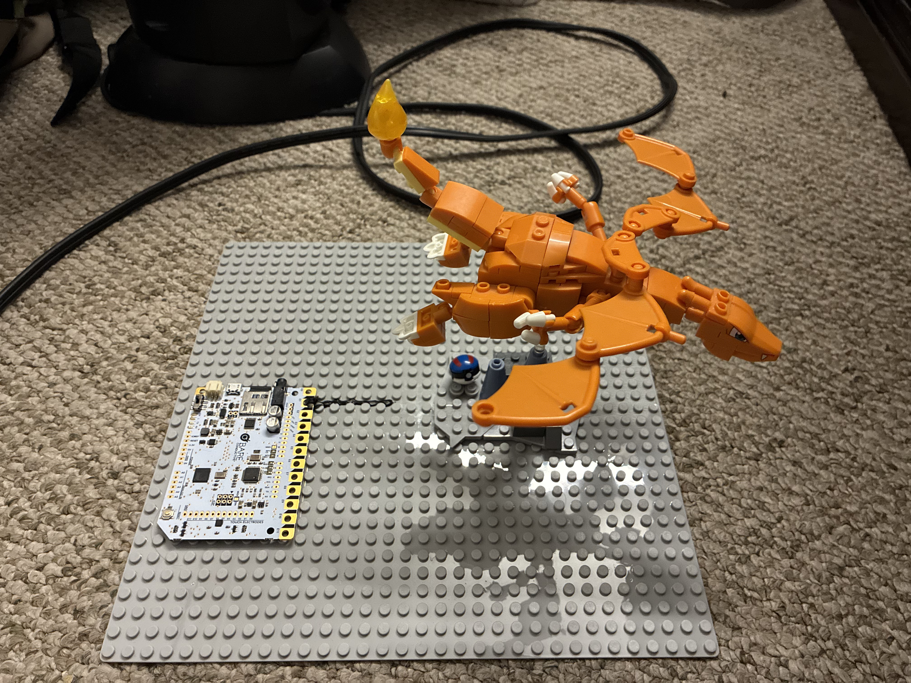
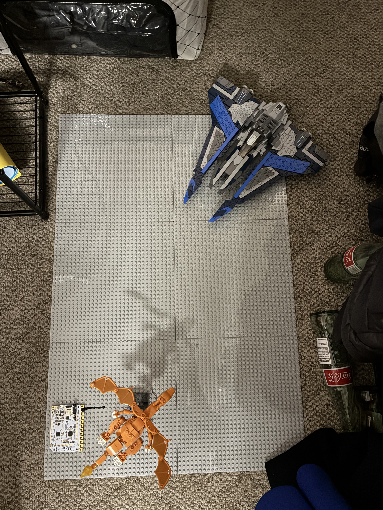
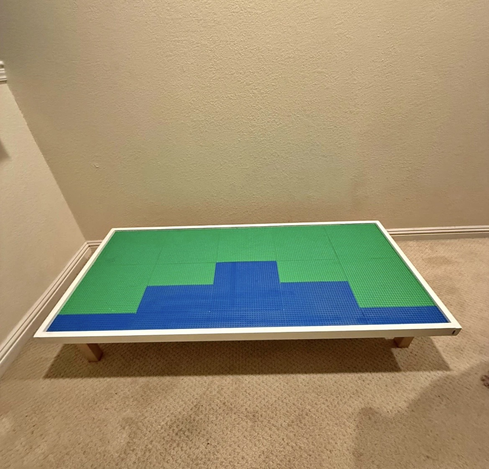
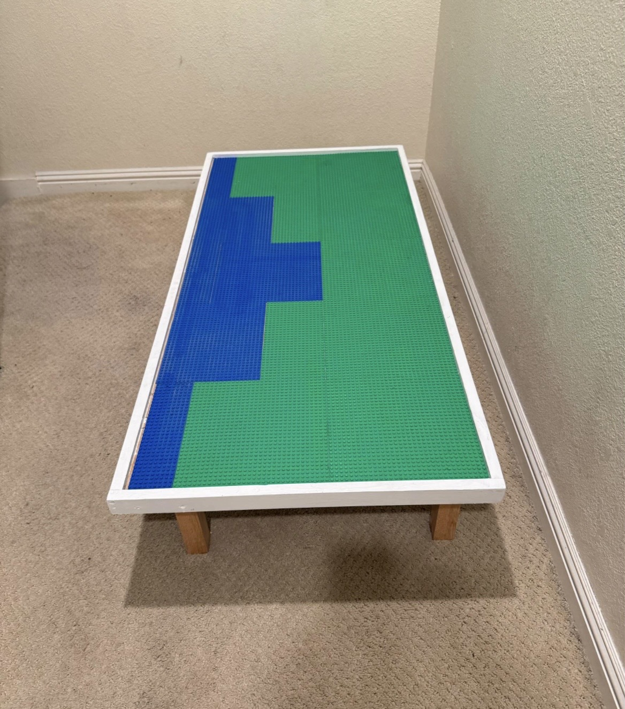
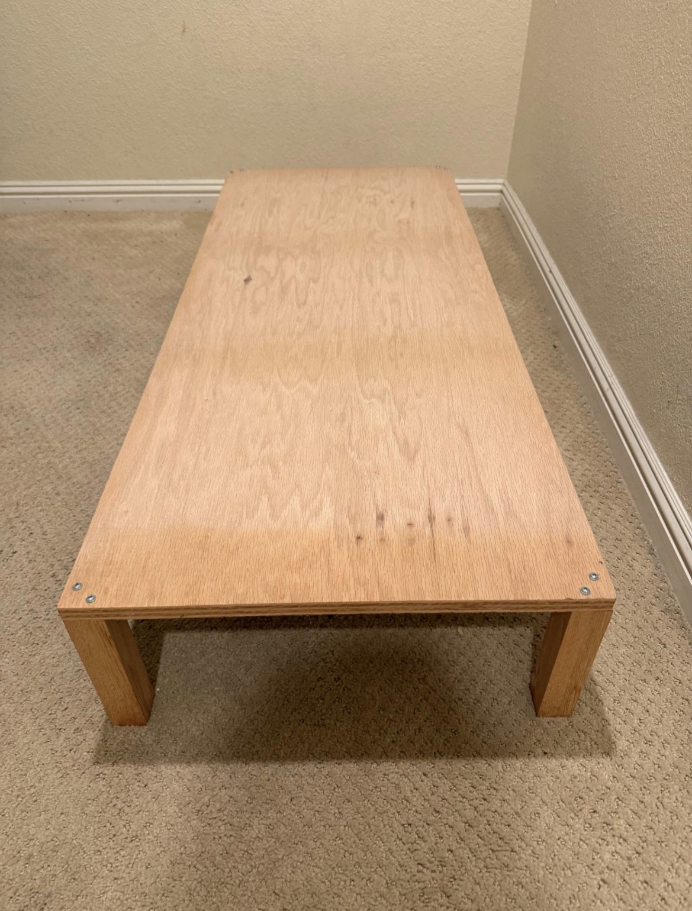

JOHN JOSEPH SANTOS
( HE/HIM )
Portfolio: LINK
About the Artist
John Santos is an Interactive Digital Media student at San José State University whose work explores how immersive and interactive experiences can reshape the way audiences engage with art. Interested in the relationship between digital systems and human interaction, he creates works that connect physical and digital space through participation. His practice centers on participation, encouraging audiences to move beyond passive observation and engage directly with the work. Using a range of interactive systems and media, he develops pieces that are meant to be experienced rather than simply viewed. John's work has been exhibited at San José State University's Spartan Day, the San José State Art Galleries, Subzero Festival in Downtown San Jose, and Maker Faire.
Press Play
Press Play is an interactive audiovisual installation built around a modified Lego surface embedded with conductive circuitry. Using a 12-electrode touch board, copper tape, and projection mapping through MadMapper, the piece allows participants to trigger synchronized sound effects and visuals by touching recognizable Lego characters drawn from different fictional universes. Each touch activates a character-specific audiovisual response mapped directly onto the Lego surface, linking physical gesture with digital imagery. By transforming a familiar object into an interactive experience, the work explores how touch can reconnect participants with the characters and franchises they recognize, such as Pokémon, Mario, and Star Wars. I was drawn to Lego because it represents play, imagination, and hands-on construction, qualities that contrast with the traditional “do not touch” environment of many galleries. I am interested in challenging the expectation that art should only be observed from a distance. By turning a familiar childhood object into an interactive installation, I aim to shift how participants approach the work, encouraging curiosity, experimentation, and direct engagement. For me, interaction is not simply a technical feature; it is a way of redefining how art can be experienced. The piece was constructed by embedding conductive pathways directly into the surface using copper tape and conductive paint, connecting individual Lego elements to a 12-electrode touch board. Each trigger point is wired to correspond with synchronized audio and projection-mapped visuals, requiring careful coordination between circuitry and digital media. The structure functions as both a physical build and a responsive digital system, balancing material construction with media. Through this process, the Lego surface becomes both a constructed object and a functioning interactive work.




